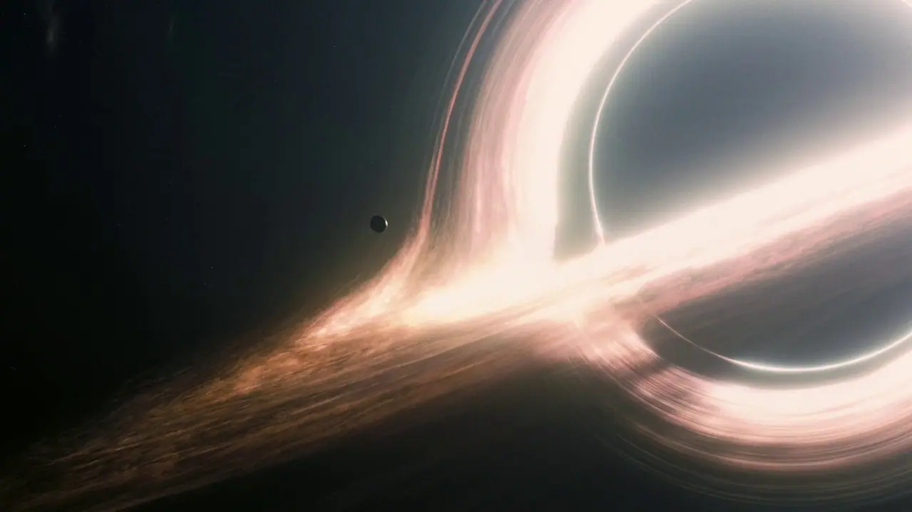

La Ciencia
Interstellar se apoya en física real más de lo que suele hacer el cine: Kip Thorne, físico teórico, fue su asesor científico. Pero también especula. Estos son los cinco conceptos que sostienen la trama —agujeros negros, dilatación del tiempo, agujeros de gusano, la relatividad que los une y la ecuación de la gravedad.
Cada afirmación de esta página está marcada según su nivel de rigor:
- ✓ Ciencia real
- Fielmente representada; física establecida y comprobada.
- ~ Especulación plausible
- Permitida por la física en teoría, pero hipotética.
- ✎ Licencia narrativa
- Forzada por el guion y cuestionada por la física.
Agujeros negros
La ciencia
Un agujero negro es una región donde la gravedad es tan intensa que nada que entre puede volver a salir, ni siquiera la luz. Su borde se llama horizonte de eventos: no es una superficie sólida, sino el punto de no retorno. ✓ Ciencia real
Alrededor de muchos agujeros negros gira un disco de acreción: gas atrapado que se acelera y se calienta a millones de grados antes de caer, y por eso brilla. La luz de ese disco y de las estrellas de fondo se curva al pasar cerca del agujero —efecto de lente gravitacional—, y eso hace que Gargantúa se vea rodeada por un anillo que parece envolverla por arriba y por abajo. Esa imagen se calculó con las ecuaciones reales de la relatividad general y el trabajo derivó en un artículo científico con revisión por pares. ✓ Ciencia real
Para que las escenas encajen, Gargantúa tiene que girar sobre sí misma casi a la máxima velocidad que permite la física (un espín de 0,9999 y pico). Es un valor extremo pero posible, y Thorne lo eligió justamente para que los números del planeta de Miller funcionaran. ~ Especulación plausible
La película muestra a Cooper cruzando el horizonte y sobreviviendo. Thorne especula con que una singularidad "amable", de un tipo que crece despacio, podría no destruir de inmediato a quien la atraviesa. Es una hipótesis de frontera, no algo comprobado. ~ Especulación plausible
En Interstellar
Gargantúa domina el sistema al que lleva el agujero de gusano: su masa y su giro fijan cuánto pesa el tiempo en cada planeta cercano. Cómo se la ve en pantalla —esfera negra, anillo de luz, estrellas que se curvan en el borde— es la representación más fiel de un agujero negro que se había hecho en cine. ✓ Ciencia real
La confirmación llegó después, y de la forma más literal posible: en 2019 el Event Horizon Telescope publicó la primera foto real de un agujero negro (M87*), y en 2022 la de Sagitario A*, el que está en el centro de nuestra galaxia. Un grupo de la Universidad de California en Santa Bárbara comparó el anillo de Gargantúa con una simulación de un agujero negro real y coincidieron dentro de un margen de apenas 7-10%. Interstellar predijo, cinco años antes de la primera foto real, cómo se ve un agujero negro. ✓ Ciencia real
Hay un detalle que el equipo de efectos ocultó a propósito. En un disco de acreción real que gira tan rápido, el lado que se acerca a nosotros debería verse muchísimo más brillante y azulado, y el que se aleja, más tenue y rojizo —el mismo efecto Doppler que corre una sirena—. Double Negative apagó ese efecto porque, en pantalla, un lado de Gargantúa mucho más brillante que el otro se leía como un error de render, no como física. ✎ Licencia narrativa
Lo que la física no admite es lo que ocurre adentro: que Cooper vea, mida y transmita información desde el interior del agujero negro y que esos datos salgan. El horizonte de eventos es, por definición, una puerta de un solo sentido. ✎ Licencia narrativa
Fuentes
- Thorne, K. The Science of Interstellar (2014), capítulos sobre agujeros negros y sobre Gargantúa.
- James, O. et al. "Gravitational lensing by spinning black holes…", Class. Quantum Grav. 32, 065001 (2015). arXiv:1502.03808.
Dilatación temporal
La ciencia
El tiempo no corre igual en todas partes. Cuanto más fuerte es la gravedad en un lugar, más lento pasa el tiempo ahí respecto de un sitio con menos gravedad. Se llama dilatación temporal gravitacional y no es teoría abstracta: los relojes atómicos la miden, y el GPS tiene que corregirla para no acumular errores de kilómetros. ✓ Ciencia real
En el planeta de Miller, una hora en la superficie equivale a unos siete años para quien espera lejos: un factor de alrededor de sesenta mil. Suena imposible, pero es alcanzable si el planeta está muy cerca del horizonte de un agujero negro que gira muy rápido. Thorne hizo las cuentas con Gargantúa y los números cierran. ✓ Ciencia real
La dilatación temporal no es exclusiva de Miller: la sufrís vos, un poco, ahora mismo. Los astronautas de la Estación Espacial Internacional, que orbitan a unos 27.500 km/h, envejecen más lento que alguien en la Tierra por efecto de su velocidad —el mismo principio, versión de bolsillo—. Después de seis meses ahí arriba, la diferencia acumulada es de apenas 0,005 segundos. En Miller, el mismo fenómeno pero llevado a un extremo gravitacional produce un factor de sesenta mil a uno: la física es idéntica, lo que cambia todo es la escala. ✓ Ciencia real
La nave Endurance, en una órbita más alta y lejana, casi no sufre esa dilatación mientras el equipo baja a Miller. Por eso Romilly acumula esos veintitrés años esperando en la nave y no en la superficie. ✓ Ciencia real
En Interstellar
La parada en Miller es el golpe emocional de la película: una demora de horas cuesta décadas, y Cooper vuelve a la nave para encontrar a sus hijos crecidos. El mecanismo es relatividad general pura, sin trucos. ✓ Ciencia real
Lo que la película fuerza un poco es que un planeta con océano y condiciones para la vida orbite de forma estable tan cerca de Gargantúa. Las mareas y la energía en esa zona serían brutales; Thorne lo admite como un caso límite, posible solo con ajustes muy finos. ~ Especulación plausible
Fuentes
- Thorne, K. The Science of Interstellar (2014), capítulo "Slowing Time" y capítulo sobre el planeta de Miller.
Agujeros de gusano
La ciencia
Un agujero de gusano es, en principio, un atajo: un túnel que conecta dos regiones muy lejanas del espacio-tiempo, de modo que se puede pasar de una a otra sin recorrer la distancia que las separa. Matemáticamente aparece como solución de las ecuaciones de Einstein desde 1935, cuando Einstein y Rosen describieron el "puente" que lleva sus nombres. ✓ Ciencia real
En la película, el agujero de gusano se ve como una esfera que muestra el cielo del otro lado deformado, no como el típico embudo plano. Esa forma esférica es la manera correcta de representarlo, y la visualización también terminó en un artículo científico. ✓ Ciencia real
El problema es mantenerlo abierto. Un agujero de gusano natural se cerraría al instante; para poder atravesarlo haría falta «materia exótica» con energía negativa que lo apuntale. Nadie observó nunca esa materia en la cantidad necesaria, y no se sabe si puede existir así. ~ Especulación plausible
Y hay algo que distingue a este concepto de los otros tres de esta sección: a diferencia de los agujeros negros —que ya fotografiamos de verdad—, nunca se detectó un agujero de gusano, ni siquiera de forma indirecta. Es el único de los cuatro sin ningún rastro observacional: existe solo en la matemática. ✓ Ciencia real
En Interstellar
El agujero de gusano cerca de Saturno es lo que hace posible toda la misión: sin él, los planetas candidatos están a miles de años de viaje. La película lo trata como un atajo estable y transitable, que es la parte más hipotética del concepto. ~ Especulación plausible
Y hay una capa que es directamente ficción: que unos seres de dimensiones superiores —o la propia humanidad del futuro— hayan colocado ese agujero de gusano ahí, a propósito, para darnos una salida. ✎ Licencia narrativa
Fuentes
- Thorne, K. The Science of Interstellar (2014), capítulo "Wormholes".
- James, O. et al. "Visualizing Interstellar's Wormhole", Am. J. Phys. 83, 486–499 (2015).
Relatividad
La ciencia
La relatividad general, que Einstein publicó en 1915, cambió lo que entendíamos por gravedad. No es una fuerza que tira de los objetos: es la forma del espacio y del tiempo. La masa y la energía curvan el espacio-tiempo a su alrededor, y lo que llamamos "caer" es seguir esa curvatura. Es la teoría de la gravedad mejor comprobada que tenemos. ✓ Ciencia real
De ahí sale una idea incómoda: no existe un «ahora» único para todo el universo. El ritmo al que pasa el tiempo depende de dónde estás y de cuánta gravedad hay. Dos relojes idénticos, uno cerca de una masa grande y otro lejos, marcan distinto. ✓ Ciencia real
Los otros tres temas de esta sección son consecuencias de ese marco: un agujero negro es espacio-tiempo curvado hasta el extremo; la dilatación del planeta de Miller es ese "tiempo que pasa distinto" llevado al límite; y un agujero de gusano es otra solución posible de las mismas ecuaciones. ✓ Ciencia real
En Interstellar
Sumá los tres saltos de tiempo de la misión y da una cifra concreta: dos años de viaje hasta el agujero de gusano, veintitrés años que se le escapan a Romilly mientras el equipo está en Miller, y cincuenta y un años más en la maniobra de honda gravitacional alrededor de Gargantúa. Total: setenta y seis años pasan en la Tierra mientras Cooper envejece apenas una década. Toda la estructura temporal de la película es una demostración acumulada de relatividad general. ✓ Ciencia real
El tramo final de la película estira la relatividad hasta convertirla en otra cosa. El Tesseract —el espacio al que Cooper entra tras cruzar Gargantúa— presenta el tiempo como una dimensión física que se puede recorrer como un pasillo, construida por seres que dominan más dimensiones que nosotros. Thorne señala esto como lo más especulativo de todo el guion. ✎ Licencia narrativa
También es licencia que la gravedad «se filtre» entre dimensiones y que Cooper pueda empujar libros o mover la aguja de un reloj desde adentro del Tesseract. La idea se inspira libremente en teorías de dimensiones extra, pero su uso en la trama es puro recurso narrativo. ✎ Licencia narrativa
Y la frase de Amelia Brand sobre el amor como una fuerza que atraviesa el espacio y el tiempo no es física: es la tesis de un personaje, no una afirmación de la película sobre el mundo real. ✎ Licencia narrativa
Fuentes
- Thorne, K. The Science of Interstellar (2014), capítulos "Warped Time and Space" y sobre el Tesseract.
La ecuación de la gravedad
La ciencia
La física del siglo XX construyó dos teorías espectacularmente exitosas que, hasta hoy, se niegan a hablarse entre sí. La relatividad general describe la gravedad a gran escala —planetas, estrellas, agujeros negros—. La mecánica cuántica describe el mundo subatómico —partículas, campos, probabilidades—. Cada una funciona perfecto en su terreno y falla en el del otro: combinarlas matemáticamente produce infinitos sin sentido. Encontrar una teoría que las unifique —la gravedad cuántica— es uno de los problemas abiertos más antiguos de la física: pasaron más de ocho décadas desde que se identificó el problema y todavía no hay solución aceptada. ✓ Ciencia real
Hay dos programas de investigación serios compitiendo, y sus propios practicantes los consideran básicamente incompatibles entre sí. La teoría de cuerdas propone que las partículas no son puntos sino diminutas cuerdas vibrantes, y apunta a unificar además todas las demás fuerzas de la naturaleza en el proceso. La gravedad cuántica de bucles es más modesta: no toca la materia, solo cuantiza el espacio-tiempo mismo, tratándolo como una red discreta en vez de un continuo suave. Ninguna de las dos tiene, hoy, evidencia experimental que la confirme. ✓ Ciencia real
El lugar donde este problema deja de ser abstracto son los agujeros negros: en la singularidad, en el centro, la gravedad es tan extrema que hace falta describirla cuánticamente, pero ningún experimento en la Tierra puede reproducir esas condiciones. Es, literalmente, información a la que no tenemos acceso. ✓ Ciencia real
En Interstellar
Toda la segunda mitad de la trama gira alrededor de "la ecuación del profesor": el profesor Brand —y después Murph— dedica su vida a resolverla, la clave para controlar la gravedad a voluntad y sacar a la humanidad entera de la Tierra. Lo que le falta a esa ecuación son datos cuánticos del interior del horizonte de eventos de un agujero negro —exactamente el tipo de información que, en la física real, no podemos obtener de ninguna manera—. Por eso Cooper tiene que caer en Gargantúa: TARS recolecta esos datos en la singularidad y Cooper se los transmite a Murph en código Morse, a través del segundero de un reloj, desde el Tesseract. ✎ Licencia narrativa
Hay un giro final que es puro guion: el profesor Brand sabía, desde el principio, que la ecuación no se podía resolver sin esos datos —así que el «Plan A» nunca fue viable, y el verdadero plan siempre fue el «Plan B» (los embriones congelados)—. Se lo confiesa a Amelia Brand en su lecho de muerte. Ese engaño es motor dramático, no física. ✎ Licencia narrativa
Lo que sí toma en serio la premisa es la idea de que "controlar la gravedad" pasaría por manipular una dimensión extra —la gravedad, a diferencia de las otras fuerzas fundamentales, es la única que en teorías como la de cuerdas se permite "filtrarse" entre dimensiones—, la misma idea que sostiene la escena del Tesseract. Thorne la trata en su libro como especulación construida sobre teorías reales pero no comprobadas. ~ Especulación plausible
Fuentes
- Thorne, K. The Science of Interstellar (2014), capítulo "The Professor's Equation" y capítulos sobre la cuarta y quinta dimensión.
- Divulgación general sobre el estado de la gravedad cuántica (teoría de cuerdas vs. gravedad cuántica de bucles): revisiones en Living Reviews in Relativity y Quanta Magazine.